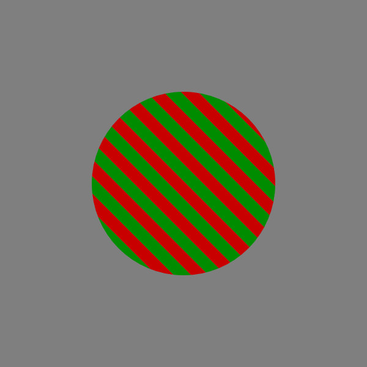

<! doctype html>
<html>
  <head>
  <title> Main Wrapper</title>
  <script src = "../jspsych.js"></script>
  <script src = "../plugins/jspsych-LTH_alternate.js"></script> <!--Include the script for the plugin-->
  <script src = "../plugins/jspsych-iso.js"></script>
  <script src = "../plugins/jspsych-html-keyboard-response.js"></script>
  <script src = "../plugins/jspsych-fullscreen.js"></script>
  <script src = "../plugins/jspsych-fixation.js"></script>
  <script src = "../plugins/jspsych-call-function.js"></script>
  <script src = "../plugins/jspsych-mp-mask-staircase.js"></script>
  <script src = "../pest.js"></script>
  <link href = "../css/jspsych.css" rel = "stylesheet"></link>
  </head>
  <body>
  </body>
  <script>


    var fixation_block={
      type:'fixation',
      fixation_cross_color:"red",
      trial_duration:1000,
    }
    var consecutive_correct=0;
    var consecutive_incorrect=0;
    var bgval = 127;


    var mCorrect=false;
    var pCorrect=false;
    var mCorrect_1u2d=false;
    var mCorrect_1u3d=false;
    var pCorrect_1u2d=false;
    var pCorrect_1u3d=false;
    var m_consecutive_correct=0;
    var m_consecutive_incorrect=0;
    var p_consecutive_correct=0;
    var p_consecutive_incorrect=0;

    var noisePestParams_1u3d={
      starting_intensity: .5,
      down_threshold: 3,
      up_threshold: 1,
      upper_intensity_limit: 1,
      lower_intensity_limit: 0.0000000001,
      starting_step_size: 0.1,
      min_step_size: 0.01,
      max_step_size: 0.2,
    }

    var lthPestParams_1u3d={
      starting_intensity: 7,
      down_threshold: 3,
      up_threshold: 1,
      upper_intensity_limit: 40,
      lower_intensity_limit: 0.0000001,
      starting_step_size: 1,
      min_step_size: .001,
      max_step_size: 2,
    }

    var noisePestParams_1u2d={
      starting_intensity: .5,
      down_threshold: 2,
      up_threshold: 1,
      upper_intensity_limit: 1,
      lower_intensity_limit: 0.0000000001,
      starting_step_size: 0.1,
      min_step_size: 0.01,
      max_step_size: 0.2,
    }

    var lthPestParams_1u2d={
      starting_intensity: 7,
      down_threshold: 2,
      up_threshold: 1,
      upper_intensity_limit: 40,
      lower_intensity_limit: 0.0000001,
      starting_step_size: 1,
      min_step_size: .001,
      max_step_size: 2,
    }


    var pPest_1u3d=new pest(noisePestParams_1u3d)
    var mPest_1u3d=new pest(lthPestParams_1u3d)
    var pPest_1u2d=new pest(noisePestParams_1u2d)
    var mPest_1u2d=new pest(lthPestParams_1u2d)

    var lthVal2;
    var lthVal3;
    var noiseLevel2;
    var noiseLevel3;

    var currLth;


    function repeat_array(reps,array){
    var arr= []
    for (var i=0; i < reps ;i++){
      arr.push(array);
    }
    return arr
  }


    var iso_instructions_block = {
      type: "html-keyboard-response",
      stimulus: "<p>You will see a disc rapidly alternating between red and green. Adjust the red/green balance with the left and right arrows.  When the disc appears to have the LEAST amount of flicker possible, press space to move on to the next trial.  Please try to get the image to the point with the absolute least amount of flicker. </p>"
    }


    var iso_test_block = {
      type: "ISO",
      choices: jsPsych.ALL_KEYS,
      aperture_height:400,
      aperture_width:400,
      dot_radius: 100
          }
    var iso_test_procedure={
            timeline: [iso_test_block],
        //  timeline: [test_block,test_block,test_block,test_block],
        repetitions: 20
          }
    var iso_debrief_block = {
            type:"html-keyboard-response",
            trial_duration: 2000,
            response_ends_trial: false,
            stimulus:function(){

            //  var trials=jsPsych.data.get().filter({trial_type:'ISO'})
            //  var rvArray=trials.select('redVal')
            //  var std=Math.sqrt(jsPsych.data.get().select('redVal').variance())
              var std=jsPsych.data.get().select('redVal').sd();
              var mean=jsPsych.data.get().select('redVal').mean();
              var median=jsPsych.data.get().select('redVal').median();
              jsPsych.data.get().addToLast({redValstd:std})
              jsPsych.data.get().addToLast({redValmean:mean})
              jsPsych.data.get().addToLast({redValmedian:median})
              //return "<p> Avg Red Value: "+mean+" Median Red Value: " + median+" STD:"+std+"</p>"
              return "<p> The main experiment will begin shortly."
            }
          }


    var firstQ="During which interval did you feel more confident in your ability to see the image's orientation?"
    var secondQ="Which direction was the first image tilting?"
    var thirdQ="Which direction was the second image tilting?"
      var main_instructions_block = {
        type: "html-keyboard-response",
        stimulus: "<p>In this part of the experiment you will view 2 consecutive grating patterns which will be tilted either to the right or the left.</p>"+
        "<p>After you will be asked which grating's orientation you more confidently saw: The grating during the first interval" +
        " or the second interval.</p>"+
        "<p>Some patterns may appear to pass too fast to see or be too scrambled to perceive.  Please make your best guess when this is the case.</p>"+
        " Following the confidence assessment, you will be asked to indicate whether the grating was tilted to the left or the right for each interval.</p>"+
        "<div style='float: left;'></img>"+
        "<p class='small'><strong> THIS IS A LEFT TILTED GRATING.</strong></p></div>"+
        "<div style='float: right;'></img>"+
        "<p class='small'><strong> THIS IS A RIGHT TILTED GRATING.</strong></p></div>"+
        "<p>Press enter to continue.</p>"

      }

//jsPsych.data.get().select('lthVal').mean()
      var turnaroundTrials=jsPsych.data.get().filter({turnaround: true});
      var thresholdBelow=turnaroundTrials.select('lthVal').mean();

      var initialize_staircases={
        type: 'call-function',
        func: function(){
          lthVal2=(127-mPest_1u2d.staircase(mCorrect_1u2d));
          lthVal3=(127-mPest_1u3d.staircase(mCorrect_1u3d));
          noiseLevel2=1-pPest_1u2d.staircase(pCorrect_1u2d);
          noiseLevel3=1-pPest_1u3d.staircase(pCorrect_1u3d);
        }
      }
      var intensity_update={
        type:"call-function",
        func: function(){
          console.log('updating staircases')
          var last5trials=jsPsych.data.get().last(5)
          var stimTrial=last5trials.filter({trial_type:'mp-mask-staircase'})
          if (stimTrial.select('staircase_type').values==1 || stimTrial.select('staircase_type').values==2){
            lthVal2=(127-mPest_1u2d.staircase(mCorrect_1u2d));
            console.log('updated lthVal2')
          }else if (stimTrial.select('staircase_type').values==3 || stimTrial.select('staircase_type').values==4){
            lthVal3=(127-mPest_1u3d.staircase(mCorrect_1u3d));
            console.log('updated lthval3')
          }
          if (stimTrial.select('staircase_type').values==1 || stimTrial.select('staircase_type').values==4){
            noiseLevel2=1-pPest_1u2d.staircase(pCorrect_1u2d);
            console.log('updated noiseLevel2')
          }else if (stimTrial.select('staircase_type').values==2 || stimTrial.select('staircase_type').values==3){
            noiseLevel3=1-pPest_1u3d.staircase(pCorrect_1u3d);
            console.log('updated noiseLevel3')
          }
        }
      }
  var test_block_1 = {
    type: "mp-mask-staircase",
    aperture_width: 600,
    aperture_height: 600,
    choices: jsPsych.ALL_KEYS,
    dot_radius: 150,
    staircase_type:1,
    lth_val: lthVal2,
    magno_noise: noiseLevel2,
    parvo_noise: noiseLevel2,
    red_val: function(){
      var redVal=jsPsych.data.get().select('redVal').mean();
      return redVal
    },
    green_val: function(){
      var greenVal=jsPsych.data.get().select('greenVal').mean();
      return greenVal
    },
    trial_type:jsPsych.timelineVariable('trial_type'),
  }

  var test_block_2 = {
    type: "mp-mask-staircase",
    aperture_width: 600,
    aperture_height: 600,
    choices: jsPsych.ALL_KEYS,
    dot_radius: 150,
    staircase_type: 2,
    lth_val: lthVal2,
    magno_noise: noiseLevel2,
    parvo_noise: noiseLevel3,
    red_val: function(){
      var redVal=jsPsych.data.get().select('redVal').mean();
      return redVal
    },
    green_val: function(){
      var greenVal=jsPsych.data.get().select('greenVal').mean();
      return greenVal
    },
    trial_type:jsPsych.timelineVariable('trial_type'),
  }
  var test_block_3 = {
    type: "mp-mask-staircase",
    aperture_width: 600,
    aperture_height: 600,
    choices: jsPsych.ALL_KEYS,
    dot_radius: 150,
    staircase_type: 3,
    lth_val: lthVal3,
    magno_noise: noiseLevel3,
    parvo_noise: noiseLevel3,
    red_val: function(){
      var redVal=jsPsych.data.get().select('redVal').mean();
      return redVal
    },
    green_val: function(){
      var greenVal=jsPsych.data.get().select('greenVal').mean();
      return greenVal
    },
    trial_type:jsPsych.timelineVariable('trial_type'),
  }
  var test_block_4 = {
    type: "mp-mask-staircase",
    aperture_width: 600,
    aperture_height: 600,
    choices: jsPsych.ALL_KEYS,
    dot_radius: 150,
    staircase_type: 4,
    lth_val:lthVal3,
    magno_noise:noiseLevel3,
    parvo_noise: noiseLevel2,
    red_val: function(){
      var redVal=jsPsych.data.get().select('redVal').mean();
      return redVal
    },
    green_val: function(){
      var greenVal=jsPsych.data.get().select('greenVal').mean();
      return greenVal
    },
    trial_type:jsPsych.timelineVariable('trial_type'),
  }
      var response1={
        type:"html-keyboard-response",
        stimulus: [firstQ],
        choices: [49,50],
        prompt:"1-First Interval 2-Second Interval",
        response_ends_trial: true,
      }
     var response2={
       type:"html-keyboard-response",
       stimulus: [secondQ],
       choices: [37,39],
       prompt:"Left Arrow Key-Left Right Arrow Key-Right",
       response_ends_trial: true,
     }
     var response3={
       type:"html-keyboard-response",
       stimulus: [thirdQ],
       choices: [37,39],
       prompt:"Left Arrow Key-Left Right Arrow Key-Right",
       response_ends_trial: true,
       on_finish: function(){
         var last4trials=jsPsych.data.get().last(4)
         var stimTrial=last4trials.filter({trial_type:'mp-mask-staircase'})
         var firstResp=last4trials.filter({stimulus: firstQ})
         var secResp=last4trials.filter({stimulus: secondQ}).select('key_press').values
         var thirdResp=last4trials.filter({stimulus: thirdQ}).select('key_press').values
         var firstAngle=stimTrial.select('First Angle').values
         var secondAngle=stimTrial.select('Second Angle').values
         if (stimTrial.select('Stimulus Order').values==1){
           if ((firstAngle==315 && secResp==37) || (firstAngle==45 && secResp==39)){
             m_consecutive_incorrect=0;
             m_consecutive_correct++;
             if (stimTrial.select('staircase_type').values==1 || stimTrial.select('staircase_type').values==2){
               mCorrect_1u2d=true;
               jsPsych.data.get().addToLast({mCorrect_1u2d: true})

             } else if (stimTrial.select('staircase_type').values==3 || stimTrial.select('staircase_type').values==4){
               mCorrect_1u3d=true;
             }
           }
           if ((secondAngle==315 && thirdResp==37)||(secondAngle==45 && thirdResp==39)){
             p_consecutive_incorrect=0;
             p_consecutive_correct++;
             if (stimTrial.select('staircase_type').values==1 || stimTrial.select('staircase_type').values==4){
               pCorrect_1u2d=true;
             } else if (stimTrial.select('staircase_type').values==2 || stimTrial.select('staircase_type').values==3){
               pCorrect_1u3d=true;
             }
           }
           if ((firstAngle==315 && secResp!=37) || (firstAngle==45 && secResp!=39)){
             m_consecutive_incorrect++;
             m_consecutive_correct=0;
             if (stimTrial.select('staircase_type').values==1 || stimTrial.select('staircase_type').values==2){
               mCorrect_1u2d=false;
             } else if (stimTrial.select('staircase_type').values==3 || stimTrial.select('staircase_type').values==4){
               mCorrect_1u3d=false;
             }
           }
           if ((secondAngle==315 && thirdResp!=37)||(secondAngle==45 && thirdResp!=39)){
             p_consecutive_incorrect++
             p_consecutive_correct=0;
             if (stimTrial.select('staircase_type').values==1 || stimTrial.select('staircase_type').values==4){
               pCorrect_1u2d=false;
             } else if (stimTrial.select('staircase_type').values==2 || stimTrial.select('staircase_type').values==3){
               pCorrect_1u3d=false;
             }
           }
         }else if(stimTrial.select('Stimulus Order').values==2){
           if ((firstAngle==315 && secResp==37) || (firstAngle==45 && secResp==39)){
             p_consecutive_incorrect=0;
             p_consecutive_correct++;
             if (stimTrial.select('staircase_type').values==1 || stimTrial.select('staircase_type').values==4){
               pCorrect_1u2d=true;
             } else if (stimTrial.select('staircase_type').values==2 || stimTrial.select('staircase_type').values==3){
               pCorrect_1u3d=true;
             }
           }
           if ((secondAngle==315 && thirdResp==37)||(secondAngle==45 && thirdResp==39)){
             m_consecutive_incorrect=0;
             m_consecutive_correct++;
             if (stimTrial.select('staircase_type').values==1 || stimTrial.select('staircase_type').values==2){
               mCorrect_1u2d=true;
             } else if (stimTrial.select('staircase_type').values==3 || stimTrial.select('staircase_type').values==4){
               mCorrect_1u3d=true;
             }
           }
           if ((firstAngle==315 && secResp!=37) || (firstAngle==45 && secResp!=39)){
             p_consecutive_incorrect++;
             p_consecutive_correct=0;
             if (stimTrial.select('staircase_type').values==1 || stimTrial.select('staircase_type').values==4){
               pCorrect_1u2d=false;
             } else if (stimTrial.select('staircase_type').values==2 || stimTrial.select('staircase_type').values==3){
               pCorrect_1u3d=false;
             }
           }
           if ((secondAngle==315 && thirdResp!=37)||(secondAngle==45 && thirdResp!=39)){
             m_consecutive_incorrect++
             m_consecutive_correct=0;
             if (stimTrial.select('staircase_type').values==1 || stimTrial.select('staircase_type').values==2){
               mCorrect_1u2d=false;
             } else if (stimTrial.select('staircase_type').values==3 || stimTrial.select('staircase_type').values==4){
               mCorrect_1u3d=false;
             }
           }

         }


       }
     }


    var main_test_procedure={
       timeline: [test_block_1,response1,response2,response3,intensity_update,test_block_2,response1,response2,response3,intensity_update,test_block_3,response1,response2,response3,intensity_update,test_block_4,response1,response2,response3,intensity_update],
       timeline_variables:[{trial_type:'1'},{trial_type:'2'}],
       randomize_order: true,
       repetitions: 20,
     }

     var break_block={
       type: 'html-keyboard-response',
       stimulus: "Feel free to take a break for up to 60s.  Press any key to continue.  The experiment will resume automatically in 60s if no key is pressed.",
       choices: jsPsych.ALL_KEYS,
       trial_duration: 60000,
       response_ends_trial: true,


     }
     alt_timeline=[]

     alt_timeline.push({
       type: 'fullscreen',
       fullscreen_mode: true
     })
    alt_timeline.push(iso_instructions_block,fixation_block,iso_test_procedure,iso_debrief_block)
    alt_timeline.push(main_instructions_block,fixation_block,initialize_staircases,main_test_procedure,break_block,main_test_procedure)
    jsPsych.init({
      timeline:alt_timeline,
      on_finish: function(){
        jsPsych.data.get().localSave('csv','mouslimPilot.csv'); //Save the data locally in a .csv file

        jsPsych.data.displayData();}
    })


    </script>
    </html>
